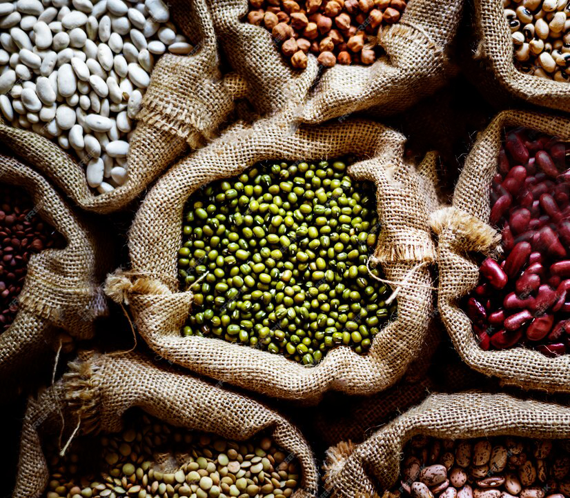

Nutritional Facts

Grains and Legumes
Grains and legumes are essential sources of complex carbohydrates and plant-based proteins,
making them a vital component of a healthy diet.
These foods provide significant amounts of dietary fiber, which helps promote
digestive health and reduce the risk of heart disease.
Grains and legumes also contain a variety of vitamins and minerals necessary to support various
body functions. Grains such as rice and oats, and legumes such as beans and lentils,
can be incorporated into daily meals in diverse ways.
In the following sections, you will find detailed information about different types of grains and legumes,
their nutritional values, and health benefits, as outlined in the tables below.
| Rice (100 grams) |
| Calories |
Protein |
Fat |
Carbohydrates |
Fiber |
| 130 kcal |
2.4 g |
0.3 g |
28 g |
0.4 g |
| Lentils (100 grams) |
| Calories |
Protein |
Fat |
Carbohydrates |
Fiber |
| 116 kcal |
9 g |
0.4 g |
20 g |
7.9 g |
| Chickpeas (100 grams) |
| Calories |
Protein |
Fat |
Carbohydrates |
Fiber |
| 164 kcal |
8.9 g |
2.6 g |
27 g |
7.6 g |
| Oats (100 grams) |
| Calories |
Protein |
Fat |
Carbohydrates |
Fiber |
| 389 kcal |
16.9 g |
6.9 g |
66 g |
10.6 g |
| Whole Wheat (100 grams) |
| Calories |
Protein |
Fat |
Carbohydrates |
Fiber |
| 340 kcal |
13.2 g |
2.5 g |
72 g |
10.7 g |
| Bulgur (100 grams) |
| Calories |
Protein |
Fat |
Carbohydrates |
Fiber |
| 342 kcal |
12.3 g |
1.3 g |
76 g |
18 g |
| Barley (100 grams) |
| Calories |
Protein |
Fat |
Carbohydrates |
Fiber |
| 354 kcal |
12.5 g |
2.3 g |
73 g |
17.3 g |
| Freekeh (100 grams) |
| Calories |
Protein |
Fat |
Carbohydrates |
Fiber |
| 325 kcal |
12.6 g |
2.5 g |
65 g |
16.5 g |
| Corn (100 grams) |
| Calories |
Protein |
Fat |
Carbohydrates |
Fiber |
| 86 kcal |
3.2 g |
1.2 g |
19 g |
2.7 g |
| Black-eyed Peas (100 grams) |
| Calories |
Protein |
Fat |
Carbohydrates |
Fiber |
| 343 kcal |
23.5 g |
1.2 g |
62 g |
15.3 g |
| Lupine (100 grams) |
| Calories |
Protein |
Fat |
Carbohydrates |
Fiber |
| 119 kcal |
16.4 g |
2.9 g |
9.8 g |
7.4 g |
| Sunflower Seeds (100 grams) |
| Calories |
Protein |
Fat |
Carbohydrates |
Fiber |
| 584 kcal |
20.8g |
51.8 g |
20 g |
8.6 g |
| Almonds (100 grams) |
| Calories |
Protein |
Fat |
Carbohydrates |
Fiber |
| 579 kcal |
21.2g |
49.9 g |
21.6 g |
12.5 g |
| Hazelnuts (100 grams) |
| Calories |
Protein |
Fat |
Carbohydrates |
Fiber |
| 628 kcal |
15 g |
61.2 g |
16.7 g |
9.7 g |
| Cashews (100 grams) |
| Calories |
Protein |
Fat |
Carbohydrates |
Fiber |
| 553 kcal |
18.2 g |
43.9 g |
30.2 g |
3.3 g |
| Pine Nuts (100 grams) |
| Calories |
Protein |
Fat |
Carbohydrates |
Fiber |
| 673 kcal |
13.7 g |
68.4 g |
13.1 g |
3.7 g |
| Pistachios (100 grams) |
| Calories |
Protein |
Fat |
Carbohydrates |
Fiber |
| 560 kcal |
20.6 g |
45.3 g |
27.2 g |
10.3 g |
NOTE
These commonly recognized values may vary slightly from one sample to another |